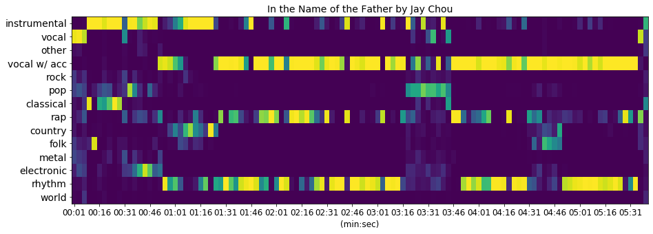
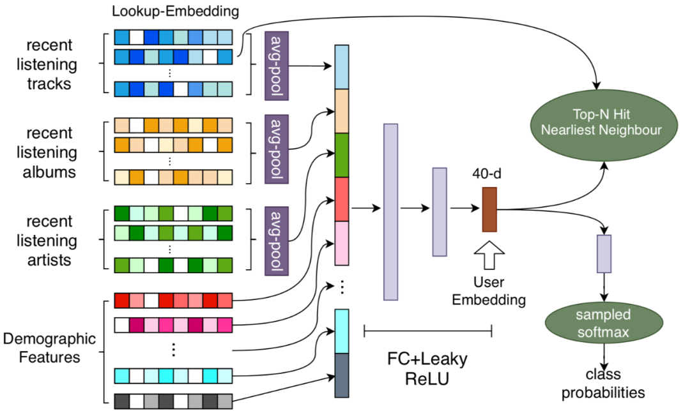
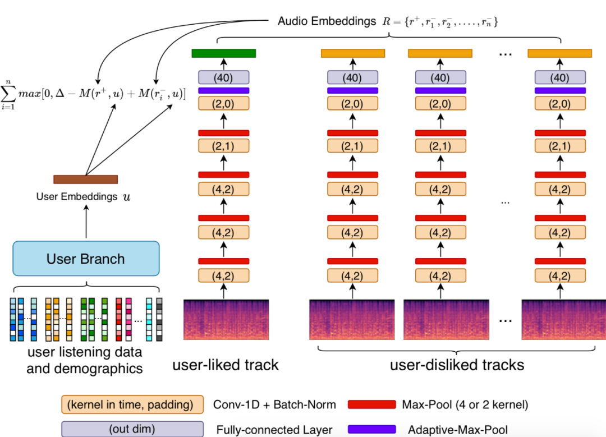

「MIR-05_2」当音乐标签化身为音频Embedding时能解决什么？
无论是信号处理还是机器学习，基于歌曲音频做自动打标的最终输出总是明确的音乐标签，但在运算过程的中间产物也大有其发挥天地，你可以说它是特征向量、或是一种音乐表征、或用当前我甚至不知道中文翻译是什么的流行叫法：Embedding。
-
可以解释的Audio Embedding -
难以解释的User Audio Embedding (在今年ICASSP大会上有线上演讲) -
Embedding作为特征在各类MIR任务的应用
『Audio Embedding』
之所以是“可以解释的”，因为在构建Embedding之前已经设定好需要从音频中获取哪些类信息，即属性（表示歌曲是唱是说是纯音乐等）和流派（10类具有区分度的大类流派）。因此研发的重点更多落在了如何分别训练可区分流派和属性的音频模型，这里可参考前一篇文章「MIR-05_1」音乐流派自动识别的前世今生。在这个步骤之后，对于任意1首歌曲，其每3秒都会得到14个值（4个属性与10个流派），那么沿着时间轴得到的整个“14 x N个3秒片段”矩阵画出来，就会如下图所示：

这个图的音频输入是周杰伦的《以父之名》，如果你还记得这首嘻哈说唱和R&B演唱等元素兼有的好歌，就也能发现上图中某些时段内，vocal w/ acc (人声带伴奏) 以及rap和rhythm对应的值很高亮。
但每首歌的时长不定，如何将“14 x N个3秒片段”矩阵再降维到统一维度的特征，作为Embedding供推荐系统使用，我们非常直接的取了6大描述性统计值，比如对rap维度沿时间轴的N个值取其最大值、最小值、均值、方差、峰度、偏度，因此每首歌最终能被表示为“14 x 6”的Audio Embedding。
之后融合到推荐系统中测试对新歌的推荐是否管用，我们采用了线上A/B Test，的确对于新歌在保证播放量的前提下同时提升完播率有显著作用。整套架构“丘比特—QQ音乐新歌精准投放系统”也在刚刚过去的QCon全球软件开发大会上，由我们数据科学团队负责人李一凡博士进行了介绍。
✎ 论文：Beici Liang, Zonghan Cai, Quan Chen, Yifan Li, Minwei Gu. ”Novel Audio Embeddings for Personalized Recommendations on Newly Released Tracks”, in Proceedings of the Machine Learning for Media Discovery Workshop (ML4MD) at the 37th International Conference on Machine Learning (ICML), 2020.
☞ QCon介绍：https://qcon.infoq.cn/2021/beijing/presentation/3312
『User Audio Embedding』
上部分的Embedding由于规定好对流派和属性信息的捕捉，难免遗漏掉其他未被定义的音乐信息。更何况人类对于音乐的偏好，确实难以用具体的维度量化。与其定义好更多的维度，不如直接拿音频训练一个模型，使其输出去拟合之前“基于用户行为训练出的推荐模型”得到的User Embedding (UE)。这种结合用户信息得到的新型音频输出，我们命名为User Audio Embedding (UAE)，相当于让大量的用户行为信息去定义音频模型到底应该学出什么，所以“难以解释”（这是陈轲同学在跟我实习期间的主要工作，不愧是UCSD的博士生，完成度相当高）。
所以第一步，我们要拿到UE（感谢推荐算法高级工程师马小栓的鼎力相助！）。这里可参考YoutubeDNN的模型架构和训练策略，但数据替换为音乐场景，如下图所示：

已知每个用户的UE，及其最近加心/收藏以及拉黑/快速切过的正负反馈歌曲，采用metric learning构建下图所示的网络，训练时我们需要将正反馈与UE的乘积vs负反馈与UE的乘积，离得越远越好：

模型训练完毕，我们即可得到一个网络，对于任何音频输入，都能输出相应的UAE。它在音乐推荐离线任务上的表现，可详见论文。如果有参加ICASSP的同僚，也可以线上听我们做详细的讲演，具体会议信息如下。
『在MIR任务中的应用』
虽然难以解释UAE各个维度上代表的语义，但我们可以把它应用到具体的MIR任务中，试探其功效。比如单纯用musicnn模型的特征 vs. 额外加上UAE，来比对这些特征在流派识别上的效果，确实加上UAE的精确度更高。我们也用这个方案参加了2020年的MIREX竞赛，综合指标达到0.7474，且对于乡村 (country)、说唱 (rap/hip-hop)、韩国流行 (K-pop ballad) 这三类的检测可达历史最高分。
☞ MIREX竞赛结果：https://www.music-ir.org/nema_out/mirex2020/results/act/mixed_report/
Embedding这个概念本身可以说是音乐内容的一种表达形式，既可如音频指纹一样精细，也可以像音乐流派一样笼统。处于中等颗粒度的Embedding已经被运用到翻唱检测、歌手识别等任务中，当每个音频可以被定长的Embedding表示时，之后在大规模数据中做快速检索便易如反掌。我在腾讯音乐最后发表的论文就是关于歌手识别。
✎ 论文：Shichao Hu, Beici Liang, Zhouxuan Chen, Xiao Lu, Ethan Zhao, Simon Lui. ”Large-scale Singer Recognition using Deep Metric Learning”, accepted to the IEEE International Joint Conference on Neural Networks (IJCNN), 2021.
上文回顾：